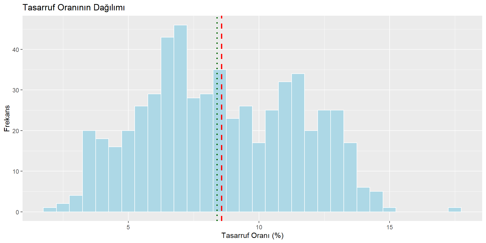
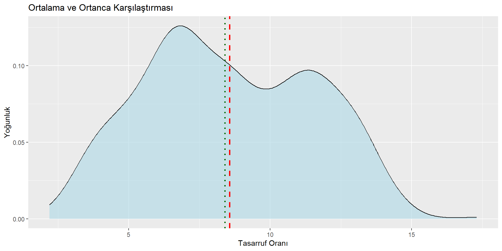
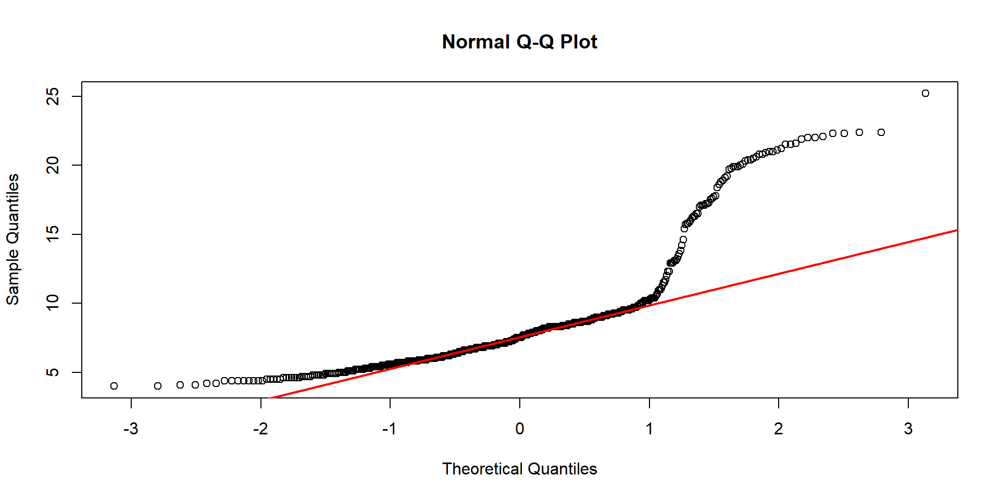

Rows: 574
Columns: 6
$ date <date> 1967-07-01, 1967-08-01, 1967-09-01, 1967-10-01, 1967-11-01, …
$ pce <dbl> 506.7, 509.8, 515.6, 512.2, 517.4, 525.1, 530.9, 533.6, 544.3…
$ pop <dbl> 198712, 198911, 199113, 199311, 199498, 199657, 199808, 19992…
$ psavert <dbl> 12.6, 12.6, 11.9, 12.9, 12.8, 11.8, 11.7, 12.3, 11.7, 12.3, 1…
$ uempmed <dbl> 4.5, 4.7, 4.6, 4.9, 4.7, 4.8, 5.1, 4.5, 4.1, 4.6, 4.4, 4.4, 4…
$ unemploy <dbl> 2944, 2945, 2958, 3143, 3066, 3018, 2878, 3001, 2877, 2709, 2…R Programlama ile Veri Analizi
Temel İstatistik
Dr. Muhammed Fatih TÜZEN
16-05-2025
Sunum Planı
- İstatistik Nedir?
- Merkezi Eğilim Ölçüleri
- Dağılım Ölçüleri
- Normal Dağılım Testi
- Korelasyon
📦 Ders Materyalleri: https://github.com/MFatihTuzen/UYIK-R
📊 İstatistik Nedir?
İstatistik, veri ile düşünmeyi öğrenmektir.
Verilerin toplanması, özetlenmesi, yorumlanması ve karar vermeye dönüştürülmesini sağlar.
🎯 Neden Önemlidir?
- Veriden bilgi çıkarma yoludur
- Karar almada nesnelliği artırır
- Bilimsel araştırmaların temelidir
- Günümüzde veri okuryazarlığının kalbidir
🧠 İki Ana Alan
| Tür | Açıklama |
|---|---|
| Tanımlayıcı | Veri özetleme, görselleştirme, dağılım analizi |
| Çıkarımsal | Örneklemden evrene genelleme, test, tahmin |
🔍 Bu sunumda tanımlayıcı istatistiklere odaklanacağız.
🧠 İstatistik ve Makine Öğrenmesi
İstatistik ve makine öğrenmesi veriyle öğrenmeyi amaçlar.
Ancak yaklaşımları, motivasyonları ve kullanımları farklılık gösterir.
🔄 Benzerlikler
- Her ikisi de veriden bilgi çıkarır
- Veri temizleme, öznitelik seçimi, modelleme içerir
- Regresyon, sınıflandırma gibi ortak teknikler paylaşılır
⚖️ Temel Farklılıklar
| Konu | İstatistik | Makine Öğrenmesi |
|---|---|---|
| Amaç | Anlam çıkarma, yorumlama | Tahmin yapma, performans artırma |
| Odak | Modelin anlaşılabilirliği | Tahmin doğruluğu / hata minimizasyonu |
| Yorumlanabilirlik | Yüksek | Genelde düşüktür (özellikle black-box modellerde) |
| Temel Yaklaşım | Model → veri | Veri → model |
📌 Kısa Not
🎯 Çıkarımsal istatistik genellikle “neden” sorusunu yanıtlamaya çalışır.
🤖 Makine öğrenmesi ise “ne olacak” sorusuna odaklanır.
🗂️ Kullanılacak Veri Seti: economics
📦 ggplot2 paketinde yer alan hazır veri setidir.
📆 Aylık gözlemler içerir (1967–günümüz)
🔢 Değişkenler
| Değişken | Açıklama |
|---|---|
date |
Gözlem tarihi |
pce |
Kişisel tüketim harcamaları (milyar $) |
pop |
Nüfus |
psavert |
Kişisel tasarruf oranı (%) |
uempmed |
Ortalama işsizlik süresi (hafta) |
unemploy |
İşsiz sayısı (bin kişi) |
🧪 Veri Önizleme
📏 Ortalama (Arithmetic Mean)
📘 Tanım
Veri setindeki tüm değerlerin toplamının, veri sayısına bölünmesiyle elde edilir.
En yaygın merkezi eğilim ölçüsüdür, ancak uç değerlere hassastır.
🧮 Matematiksel İfade
\[ \bar{x} = \frac{1}{n} \sum_{i=1}^n x_i \]
- \(x_i\): i’nci gözlem
- \(n\): toplam gözlem sayısı
💡 R Kullanımı
⚠️ Eksik Değerler
Eksik değer varsa na.rm = TRUE argümanı gerekir:
💬 na.rm = TRUE: “NA değerleri kaldır” anlamındadır. Aksi halde sonuç NA döner.
⚖️ Ortanca (Median)
📘 Tanım
Veriler sıralandığında ortada kalan değerdir
Uç değerlere karşı daha dayanıklıdır
Asimetrik dağılımlarda ortalamadan farklı olabilir
🧮 Hesaplama Yöntemi
- \(n\) tekse: ortadaki değer
- \(n\) çiftse: ortadaki iki değerin ortalaması
💡 R Kullanımı
💡 Ortanca, çarpık dağılımlar için ortalamadan daha doğru bir merkezi eğilim göstergesidir.
🔁 Mod (Mode)
📘 Tanım
Bir veri setinde en sık tekrar eden değerdir.
Özellikle kategorik verilerde anlamlıdır.
Sayısal verilerde de kullanılır ama daha az yaygındır.
R’de yerleşik
mode()fonksiyonu bu işe yaramaz! 🙃
🧮 Örnek R Fonksiyonu
Mode <- function(x) {
ux <- unique(x)
ux[which.max(tabulate(match(x, ux)))]
}
Mode(round(economics$psavert, 1))[1] 6.4🎯 round() ile ondalıklar yuvarlanarak tekrar eden değerler daha anlamlı hale getirilir.
📝 Not
Mod tek olmayabilir (bimodal, multimodal)
Bazı veri setlerinde mod olmayabilir (tüm değerler farklıysa)
🎨 Ortalamayı ve Ortancayı Görselleştir
ggplot(economics, aes(x = psavert)) +
geom_histogram(binwidth = 0.5, fill = "lightblue", color = "white") +
geom_vline(aes(xintercept = mean(psavert)), color = "red", linetype = "dashed", size = 1) +
geom_vline(aes(xintercept = median(psavert)), color = "darkgreen", linetype = "dotted", size = 1) +
labs(title = "Tasarruf Oranının Dağılımı",
x = "Tasarruf Oranı (%)", y = "Frekans")
⚠️ Ortalama ve ortanca arasındaki fark, dağılımın çarpıklığını gösterir
🎯 Sağ çarpık → ortalama > ortanca
🎯 Sol çarpık → ortalama < ortanca
📉 Min – Max – Range
📘 Tanımlar
- Minimum (min): En küçük gözlem
- Maksimum (max): En büyük gözlem
- Range: Verinin yayılımı → max - min
🧮 Matematiksel Formül
\[ \text{Range} = \max(x_i) - \min(x_i) \]
💡 R Uygulaması
[1] 4[1] 25.2[1] 4.0 25.2⚠️ Range uç değerlere karşı oldukça hassastır.
✅ IQR gibi daha dayanıklı ölçülerle desteklenmelidir.
🧮 Çeyrekler ve IQR
📘 Tanım
- Çeyrekler (quantiles): Veriyi dört eşit parçaya bölen sınırlar
- Q1: 25. yüzdelik
- Q2: 50. yüzdelik (medyan)
- Q3: 75. yüzdelik
- Q1: 25. yüzdelik
- IQR (Interquartile Range): Q3 − Q1
🧮 Formül
\[ \text{IQR} = Q_3 - Q_1 \]
💡 R Uygulaması
📐 Varyans ve Standart Sapma
📘 Tanımlar
- Varyans: Değerlerin ortalamadan ne kadar sapma gösterdiğini ölçer
- Standart Sapma: Varyansın karekökü – birimleri orijinal veriyle aynıdır
🧮 Formüller
\[ s^2 = \frac{1}{n - 1} \sum_{i=1}^n (x_i - \bar{x})^2 \]
\[ s = \sqrt{s^2} \]
🎯 “n-1”, örneklem varyansı için düzeltme katsayısıdır
💡 R Uygulaması
⚠️ Aykırı değerler varsa standart sapma şişebilir
🎯 IQR ile birlikte kullanmak iyi bir stratejidir
📦 Boxplot ile Yayılımı Görmek
📘 Neyi Gösterir?
- Ortanca (Q2), Q1 ve Q3
- Min ve Max (IQR dışındaki uç noktalar)
- Aykırı değerleri ayrı noktalarla gösterir
💡 R Uygulaması
⚠️ Aykırı değerler = IQR × 1.5 dışındaki gözlemler
🎯 Boxplot hızlı, sade ve güçlü bir özet sunar
📊 Histogram + Yoğunluk = Anlam Derinliği
💡 Histogram = Frekans
💡 Yoğunluk Eğrisi = Sürekli dağılım tahmini
🎯 Histogram + yoğunluk birlikte yorumlandığında çarpıklık, çok tepelilik daha kolay anlaşılır
🎨 Ortalama ve Ortanca ile Görsel Karşılaştırma
ggplot(economics, aes(x = psavert)) +
geom_density(fill = "lightblue", alpha = 0.6) +
geom_vline(aes(xintercept = mean(psavert)), color = "red", linetype = "dashed", size = 1) +
geom_vline(aes(xintercept = median(psavert)), color = "darkgreen", linetype = "dotted", size = 1) +
labs(title = "Ortalama ve Ortanca Karşılaştırması",
x = "Tasarruf Oranı", y = "Yoğunluk")
📌 Ortalamadan sapma varsa → çarpıklık vardır
🔍 Bu tür grafikler sayısal analizleri destekler
🛑 Aykırı Değerler IQR ile Nasıl Bulunur?
Q1 <- quantile(economics$uempmed, 0.25)
Q3 <- quantile(economics$uempmed, 0.75)
IQR_val <- Q3 - Q1
alt_sinir <- Q1 - 1.5 * IQR_val
ust_sinir <- Q3 + 1.5 * IQR_val
economics$uempmed[economics$uempmed < alt_sinir | economics$uempmed > ust_sinir] [1] 14.2 17.2 16.0 16.3 17.8 18.9 19.8 20.1 20.0 19.9 20.4 22.1 22.3 25.2 22.3
[16] 21.0 20.3 21.2 21.0 21.9 21.5 21.1 21.5 20.9 21.6 22.4 22.0 22.4 22.0 20.6
[31] 20.8 20.5 20.8 19.7 19.2 19.1 19.9 20.4 17.5 18.4 18.8 19.9 18.6 17.7 15.8
[46] 17.2 17.6 17.1 17.1 17.0 16.2 16.5 16.5 16.3 17.1 17.3 15.4 15.9 15.8 15.7
[61] 14.6 13.8⚠️ Aykırı ≠ Hatalı!
🎯 Aykırı değerler analitik fırsatlar da sunabilir
🧠 Normallik Nedir?
📘 Tanım
Bir değişkenin değerleri, ortalama etrafında çan eğrisi şeklinde simetrik olarak dağılıyorsa buna normal dağılım denir.
🎯 Özellikler
- Ortalama = Ortanca = Mod
- %68, %95, %99.7 kuralı (Empirik kural)
- Teorik temel: z-skorları, hipotez testleri, regresyon

💡 Pratikte Neden Önemli?
- Parametrik testler bu varsayıma dayanır
- Dağılımın normal olup olmaması analiz yöntemini belirler
📊 Histogram + Yoğunluk = İlk İzlenim
🔍 Gözle → kabaca çarpık mı, simetrik mi, çifte tepe mi yorum yapılabilir
❗ Ama kesin yorum için başka araçlar gerekir
📈 QQ Plot ile Görsel Normallik Kontrolü
🔍 Nasıl Yorumlanır?
Noktalar çizgiye yakınsa → dağılım normale yakın
Uçlardaki sapmalar → çarpıklık, kuyruk problemleri olabilir
Çizgi: teorik normal dağılım
Noktalar: gözlemleriniz
✅ Simetrik dağılımlar çizgi etrafına düzgün oturur
❌ Aykırı değerler veya çarpıklık varsa noktalar çizgiden sapar
🧪 shapiro.test() – İstatistiksel Normallik Testi
Shapiro-Wilk normality test
data: economics$uempmed
W = 0.76453, p-value < 2.2e-16📌 Hipotezler
H₀: Veri normal dağılmıştır
H₁: Veri normal dağılmamıştır
🔍 Nasıl yorumlanır?
| p-değeri | Yorum |
|---|---|
| p < 0.05 | H₀ reddedilir → Veri normal değil |
| p ≥ 0.05 | H₀ reddedilemez → Veri normal olabilir |
🧠 Neye dikkat edilmeli?
❗ p-değeri, “veri normaldir” demez → sadece reddedemiyoruz der
⚠️ Test aşırı duyarlıdır
⚠️ Büyük örneklemlerde küçük sapmalar bile anlamlı çıkabilir
🎯 Bu nedenle görsel + istatistiksel birlikte değerlendirilmelidir
🎯 Tavsiye
Görsel analiz (QQ grafiği, histogram) ile birlikte değerlendirin. Tek başına p-değeri karar için yeterli değildir.
🎯 p-değeri Nedir?
p-değeri, sıfır hipotezi (H₀) doğru olduğu varsayımı altında, elimizdeki veri gibi veya ondan daha uç bir veri elde etme olasılığıdır.
Başka bir deyişle:
H₀ doğruysa, bu veri ne kadar olağan dışı?
🧪 Teknik Anlamda:
\[p=P(test istatistiği ≥ gözlenen değer∣H0)\]
Yani elimizdeki gözlem, H₀ altında ne kadar uçta?
p küçükse → “Bu veri H₀ altında pek makul değil” → H₀’ı reddederiz.
📚 Diğer Normallik Testleri
Sadece Shapiro-Wilk testi değil, başka testler de vardır:
ks.test()– Kolmogorov-Smirnov testi
ad.test()– Anderson-Darling testi (nortestpaketi)
lillie.test()– Lilliefors testi (nortestpaketi)
⚠️ Her test farklı özelliklere odaklanır
Bazıları uç değerlere, bazıları orta bölgelere daha hassastır
Test seçimi: örneklem büyüklüğü ve veri yapısına göre değişebilir
✅ Derin analizlerde birden fazla test ile destek alınabilir
🔗 Korelasyon Nedir?
📘 Tanım
Korelasyon, iki sürekli değişken arasındaki doğrusal ilişkiyi ölçer.
Sonuç: -1 ile +1 arasında bir değer alır.
- r ≈ +1: Pozitif güçlü ilişki (bir artarsa diğeri de artar)
- r ≈ -1: Negatif güçlü ilişki (biri artarsa diğeri azalır)
- r ≈ 0: İlişki zayıf ya da yok
🧮 Pearson Korelasyon Katsayısı
\[ r = \frac{ \sum (x_i - \bar{x})(y_i - \bar{y}) }{ \sqrt{ \sum (x_i - \bar{x})^2 } \sqrt{ \sum (y_i - \bar{y})^2 } } \]
❗ Korelasyon sadece doğrusal ilişkileri ölçer
❌ Nedensellik göstermez
🔍 İki değişken arasında güçlü ilişki varsa → görsel ile desteklenmeli
📈 R ile Korelasyon Analizi
💡 Örnek: pce (tüketim) ve pop (nüfus)
⚠️ use = "complete.obs" → eksik gözlemleri göz ardı et
🔄 method = "pearson" varsayılan ama spearman da seçilebilir
🎨 Görselle Destekleyelim
✅ Doğrusal bir ilişki görsel olarak da doğrulanıyor
❗ Korelasyon ≠ nedensellik!
🍦 Dondurma satışı ↔︎ Boğulma vakaları
Yaz aylarında dondurma satışı artar
Aynı dönemde boğulma vakaları da artar
Bu iki değişken pozitif korelasyonludur
❌ Ama bu neden–sonuç ilişkisi değildir
Ortak sebep: hava sıcaklığı
📺 Televizyon izleme süresi ↔︎ Kalp hastalığı
Daha çok televizyon izleyenlerde kalp hastalığı daha yaygın olabilir
❌ Ama bu “TV kalbe zarar verir” demek değildir
Belki hareketsizlik, diyet, yaş gibi gizli değişkenler (confounder) etkendir
🏠 Nikah sayısı ↔︎ Elektrik tüketimi
Yıllar içinde her ikisi de artar
Korelasyon yüksek çıkabilir
❌ Ama biri diğerinin nedeni değildir
Ortak neden: nüfus artışı
🧢 Deniz korsanları sayısı ↔︎ Küresel ısınma
Korsan sayısı düştükçe, küresel sıcaklık arttı
📈 Güçlü negatif korelasyon!
😂 Ama elbette bu tamamen anlamsız bir korelasyondur
Bu tür saçma korelasyonlar için Spurious Correlations sitesine bakılabilir
⚠️ Korelasyon sadece birlikte değişimi gösterir, neden–sonuç ilişkisi kurmaz
🧪 Nedensellik ancak deney, kontrol, modelleme ve bağlamsal bilgi ile ortaya konur
✅ Ana Mesajlar – Temel İstatistik
- İstatistik, veriyi anlamlandırma sanatıdır
- Tanımlayıcı istatistikler = Veriyi okumanın ilk adımı
- Ortalama, ortanca ve yayılım ölçüleri birlikte değerlendirilmeli
- Aykırı değerler hemen silinmemeli, analitik fırsat olabilir
- Görsel + sayısal özetler birlikte sunulmalı
- Normallik varsayımı → analiz yöntemini belirler
- Korelasyon ilişki gösterir ama neden-sonuç ilişkisi değildir!
🎯 Güçlü analiz → iyi tanımlama + doğru yorum + uygun görselleştirme
📚 Faydalı Kaynaklar ve Önerilen Paketler
📘 Kitaplar
- R for Data Science – Hadley Wickham
- ModernDive – Özellikle temel istatistik
- The Big Book of R – Bölüm: Statistics
📦 Paketler
summarytools– detaylı özet
psych–describe()fonksiyonu
skimr– hızlı özetleme
ggplot2– görselleştirme
nortest– ek normallik testleri
💡 Sunumda yer vermediğimiz testler ve ileri analizler için bu kaynakları inceleyin
🙏 Teşekkürler!
Bu oturumda:
✅ Temel istatistik kavramlarını öğrendik
✅ R ile uygulamalı örnekler yaptık
✅ Görsel yorumlama becerimizi geliştirdik
✅ Veriye nasıl yaklaşmamız gerektiğini tartıştık
🎯 Unutma:
İyi bir veri analisti olmak, sayılara bakmak değil, onları anlamaktır.
📬 Sorularınız için:
📧 fatih.tuzen@tuik.gov.tr
📎 LinkedIn: Dr. M. Fatih Tüzen

Altıncı Uluslararası Uygulamalı İstatistik Kongresi (UYIK 2025)